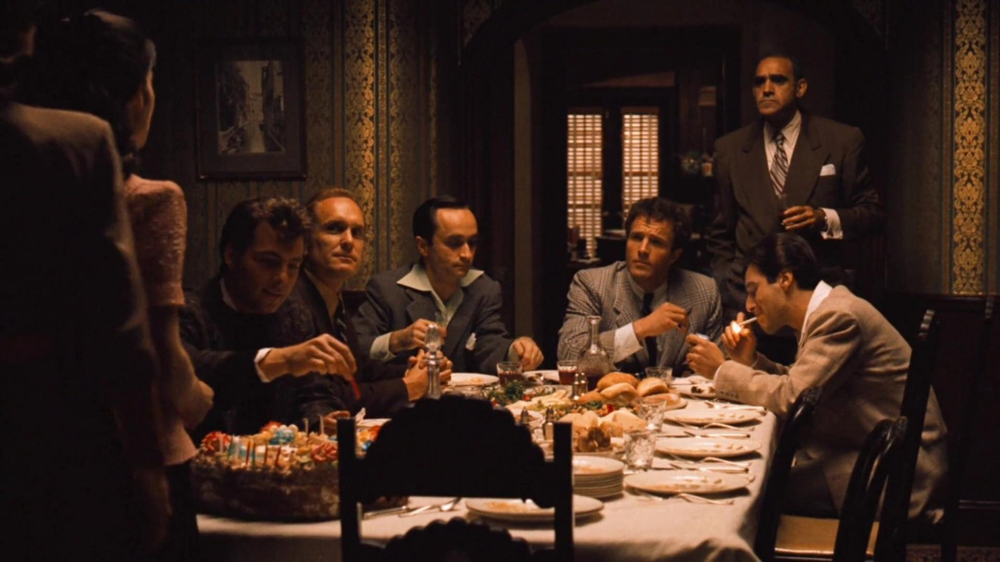
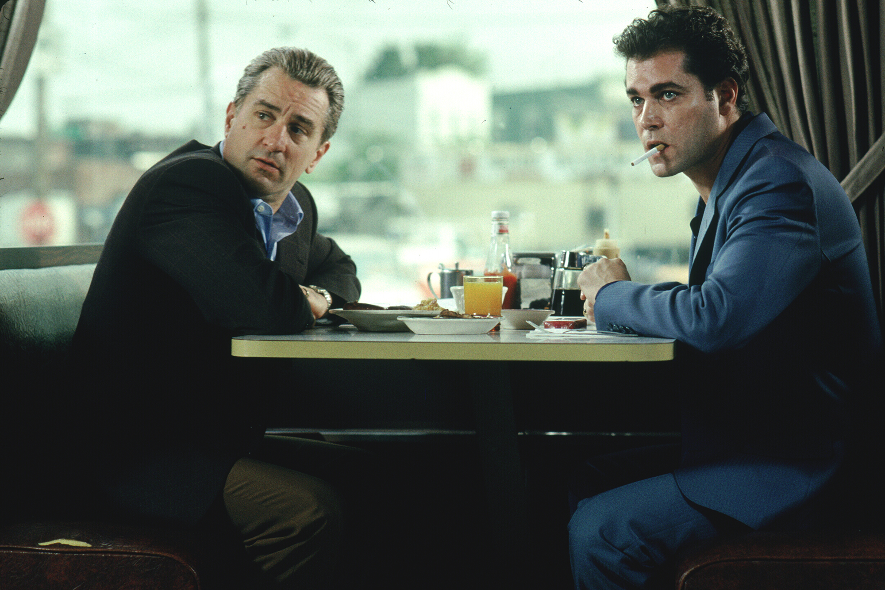
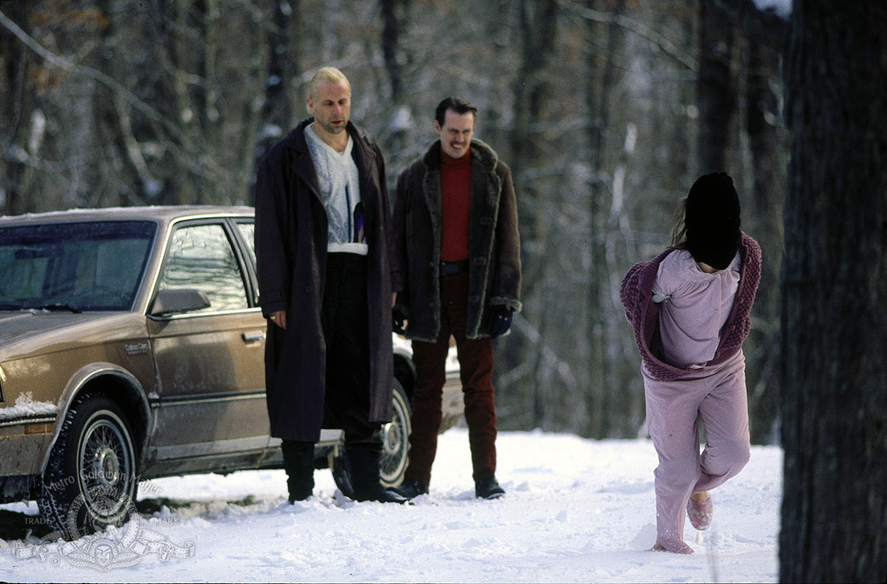

Godfather
The Godfather, American gangster epic film, released in 1972, that was adapted from the 1969 best-selling novel by Mario Puzo and has been regarded as a masterpiece since its release. Its creative cinematography, haunting score, and unforgettable performances by such actors as Marlon Brando and Al Pacino made the multigenerational saga an enduring cultural touchstone.
Goodfellas
The story of Henry Hill and his life in the mob, covering his relationship with his wife Karen Hill and his mob partners Jimmy Conway and Tommy DeVito in the Italian-American crime syndicate.
Fargo
Minnesota car salesman Jerry Lundegaard's inept crime falls apart due to his and his henchmen's bungling and the persistent police work of the quite pregnant Marge Gunderson.
La Piscine
Lovers Marianne and Jean-Paul spend their vacation in a villa on the French Riviera near St-Tropez. Marianne invites her former lover, Harry, and his teenage daughter to stay. Tension rises between them, especially when Jean-Paul seduces Penelope.